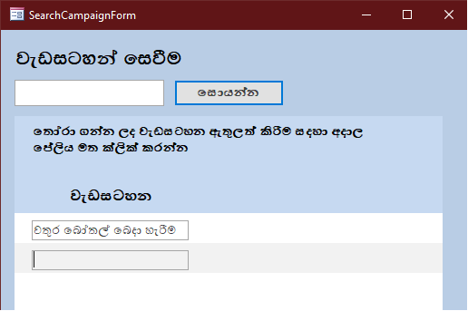
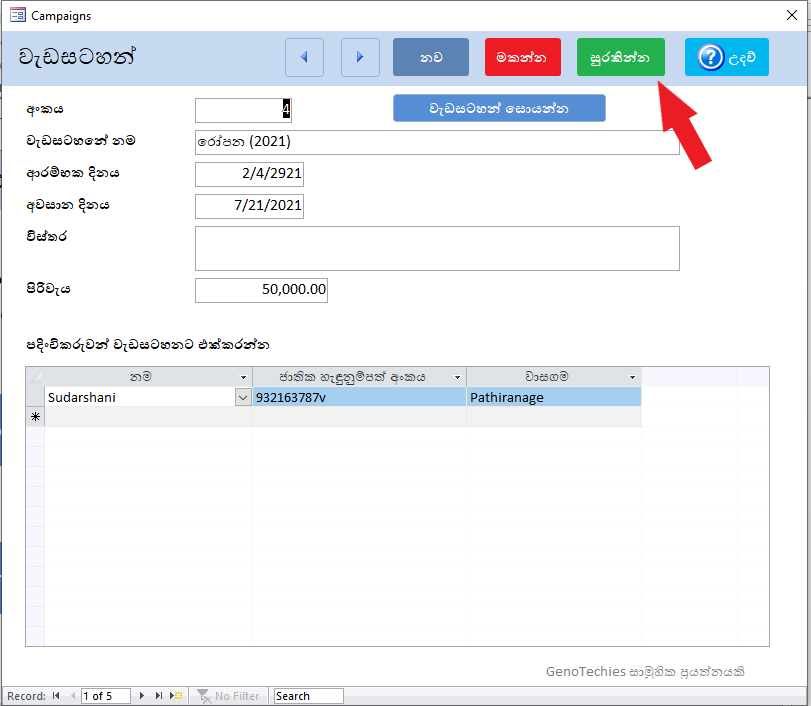
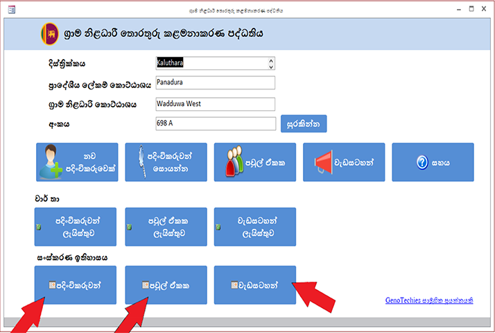

ග්රාම නිලධාරී මහතුන්ගේ මූලික තොරතුරු කළමනාකරන පද්ධතිය
පරිශීලක සහය (User Documentation) : පළමු වෙළුම
ඔබේ ග්රාම නිලධාරී කොට්ඨාසයට සම්බන්ධ මූලික තොරතුරු ඇතුලත් කිරීම, පදිංචි කරුවන් , පවුල් එකක වලට අදාළ දත්ත ඇතුලත් කිරීම,සෙවීම, වෙනස් කිරීම හෝ ඉවත් කිරීමට අදාළ කරුණු පරිශීලක සහය (User Documentation) තුල අන්තර්ගත වේ.
ග්රාම නිලධාරී මහතුන් වෙනුවෙන් ම නිර්මාණය කල මෙම තොරතුරු පද්ධතිය තුලින් එදිනෙදා රාජකාරි අවස්තාවන්හිදී සිදුවන තොරතුරු සෙවීම් ඇතුලු මූලික තොරතුරු කලමණාකරන කටියුතු පහසුවෙන් කරගැනීමට අවශ්ය පදනම සැපයීම සදහා දරන සාමුහික ප්රයත්නයකි.
පද්ධති ස්ථාපනය ( Installation ) සඳහා පිවිසීම
පහත දැක්වෙන්නේ ඔබ සිංහල සංස්කරණය විවෘත කළවිට ලැබෙන මූලික අතුරු මුහුණතයි.
ග්රාම නිලධාරී කොට්ඨාසයට සම්බන්ධ මූලික තොරතුරු ඇතුලත් කිරීම

- පලමුව ඔබ කල යුත්තෙ ඉහත රූපයේ පරදි ඔබේ ග්රාම නිලධාරී කොට්ඨාසයට සම්බන්ධ මූලික තොරතුරු ඇතුලත් කර සුරකින්න බොත්තම එබීමයි.
- මෙම තොරතුරු පද්ධතිය භාවිතා කරන සෑම අවස්ථාවකදීම කිසියම් හෝ එම අවස්ථාව ට අයත් ගැටලුවක් තිබේ නම් පහත පෙන්වා දී ඇති පරදි අතුරු මුහුනතේ සදහන් සහය යන බොත්තම එබීම තුලින් සහය ලිපිගොනුවෙ සදහන් ගැටලුවට අවශ්ය සහය වෙත පිවිසිය හැක.

නව පදිංචිකරුවෙකු දත්ත ගබඩාවට ඇතුලත් කිරීම
- දෙවනුව නව පදිංචිකරුවෙක් දත්ත ගබඩාවට ඇතුලත් කිරීම සදහා " නව " බොත්තම ඔබන්න.

- මෙහි අංකය ස්ව්යංක්රීයව ඇතුලත් වේ.ඒ සදහා අංක ඇතුලත් කිරීමක් අවශ්ය නොවේ
- පදිංචිකරුවන් අතර අංක පිලිවලට මාරු ඉදිරියට හෝ පසුපසට මාරු වීම සදහා ඉහත අතුරු මුහුනතේ 1 හි පෙන්වා ඇති පරදි කුඩා ඊතල දෙක යොදාගන්න
- නම ,වාසගම ඇතුලු ඕනෑම තොරතුරක් සින්හලෙන් හෝ ඉංග්රීසියෙන් ඇතුලත් කල හැක.
- වයස අවුරුදු 18 ට අඩු අයගෙ දත්ත ඇතුලත් කිරීමට ඇති අවශ්යතාව සලකා හැදුනුම්පත අනිවාර්ය කර නැත.
- උපන්දිනය අනිවාර්ය වේ. නැතහොත් සුරැකිය නොහැක. උපන්දිනය ඇතුලත් කිරීමේදි පහත අතුරු මුහුනතෙන් දක්වා ඇති ආකාරයට ඇතුලත් කල හැක.

- එසේ ඇතුලත් කර ඊට පහතින් ඇති ජංගම දුරකතන අංකය යෙදීම සදහා ඇති කොටුව සිලෙක්ට් කිරීමේදි උපන්දිනය පහත සදහන් ආකාරයට පිලිවලට දිස් වේ.

- දුරකථන අංකය ටයිප් කිරීමේදි අංක වෙන් කිරීමකින් තොරව පහත අතුරුමුහුනතේ දක්වා ඇති ආකරයට ටයිප් කරන්න.

- පවුල් ඒකකය ඇතුලත් කිරීම සදහා පහත අතුරුමුහුනතේ පෙන්වා දී ඇති ආකාරයට පවුල් ඒකක සොයන්න යන බොත්තම එබීම තුලින් ඔබට පවුල් ඒකක සෙවීමට අදාල අතුරුමුහුනතට පිවිසිය හැක. මේ තුලින් ඔබ පෙර අවස්ථාවකදී පද්ධතිය වෙත ඇතුලත් කල පවුල් ඒකකය ඉහත කී පදිංචිකරුවන් ඇතුලත් කරන අතුරුමුහුනතට ඇතුලත් කල හැක.


- පවුල් ඒකක සොයන්න යන බොත්තම එබීම තුලින් ලැබෙන පහත අතුරු මුහුනත තුලින් ඔබට අවශ්ය පවුල් ඒකකයක් සොයා ගත හැක. එසේ සෙවීම සදහා පහත අතුරු මුහුනතෙ පෙන්වා ඇති කොටුව තුල ඔබට සෙවීමට අවශ්ය පවුල් ඒකකයෙ නම සදහන් කර ඊට දකුනුපසින් ඇති " සොයන්න " යන බොත්තම ඔබන්න
- ඔබට අවශ්ය පවුල් ඒකකයට අදාල නමේ කොටසක් පමනක් ටයිප් කිරීම තුලින්ද අදාල පවුල් ඒකකය සොයා ගත හැක.
- එසේ සොයා ගත් පවුල් ඒකකය ඉහත සදහන් කල පදිංචිකරුවන් ඇතුලත් කිරීමේ ෆෝරමය වෙත ඇතුලත් කිරීමට පවුල් ඒකකයේ නම ක්ලික් කිරීම තුලින් සිදු කල හැක.
- එය සිලෙක්ට් කර පසු පවුල් ඒකකයට අදාල අංකය පහත පරදි ඇතුලත් වේ

- එසේ ඔහු අයත් පවුල් ඒකකය ඇතුලත් කර නොමැති නම් ” පවුල් ඒකකය ” යන්න හිස්ව තබා එය පසුව ඇතුලත් කරන්න.
- ඇතුලත් කරන සාමාජිකයා ගෘහ මූලිකයෙක් නම් පමනක් ඉහත සදහන් ගෘහ මූලික යන කුඩා කොටුව ක්ලික් කරන්න. ගෘහ මූලික තත්වයෙන් ඉවත් කිරීම සදහා එම කොටුව නැවතවරක් ක්ලික් කරන්න.
ඔබ මෙම අතුරුමුහුනත වෙත අර්ධ වශයෙන් දත්ත ඇතුලත් කර එය කොලෝස් කර විට එය ස්ව්යංක්රීයව සුරැකීමට (save) වේ.එබැවින් සියලු දත්ත නිවැරදිව ඇතුලු කිරීම් අවසානයේ එම ඇතුලු කල දත්ත සුරැකීම (save) සදහා ඉහත අතුරු මුහුනතේ 1 හි පෙන්වා ඇති පරදි " සුරකින්න " යන බොත්තම ඔබන්න
පවුල් ඒකක
පදිංචිකරුවන් කිහිපදෙනෙක් එකට එකතුකර තනි එකකයක් ලෙස සැලකීමට පවුල් එකක හඳුන්වා දී ඇත.පවුල් ඒකක බොත්තම එබීමෙන් පවුල් ඒකක ඇතුලත් කිරීමට අදාල පහත අතුරුමුහුනතට පිවිසිය හැක

- පදිංචිකරුවන් කිහිපදෙනෙකු එකතු කර තනිපවුලක් ලෙස සැලකීමට ඇති පහසුකම මෙම පවුල් ඒකකය යන පහසුකම තුලින් ලබා දී ඇත.
- මෙම අතුරු මුහුණතේ නව පවුල් ඒකක ඇතුලත් කිරීම කළ හැක.
- මෙහි අංකය ස්ව්යංක්රීයව ඇතුලත් වේ. ඒ සදහා අංක ඇතුලත් කිරීමක් අවශ්ය නොවේ
- නව පවුල් ඒකකයක් ඇතුලත් කිරීම සදහා ඉහත අතුරු මුහුනතේ සදහන් පරදි " නව " බොත්තම ඔබන්න
- වැඩසටහන් අතර අංක පිලිවලට ඉදිරියට හෝ පසුපසට මාරු වීම සදහා 1 හි පෙන්වා දී ඇති කුඩා ඊතල දෙක යොදාගන්න
- පවුල් ඒකක සොයන්න යන බොත්තම එබීම තුලින් ලැබෙන පහත අතුරු මුහුනත තුලින් ඔබට අවශ්ය පවුල් ඒකකයක් සොයා ගත හැක. එසේ සෙවීම සදහා පහත අතුරු මුහුනතෙ පෙන්වා ඇති කොටුව තුල ඔබට සෙවීමට අවශ්ය පවුල් ඒකකයෙ නම සදහන් කර ඊට දකුනුපසින් ඇති " සොයන්න " යන බොත්තම ඔබන්න
- ඔබට අවශ්ය පවුල් ඒකකයට අදාල නමේ කොටසක් පමනක් ටයිප් කිරීම තුලින්ද අදාල පවුල් ඒකකය සොයා ගත හැක.
- සියලු දත්ත ඇතුලු කිරීම් අවසානයේ එම ඇතුලු කල දත්ත සුරැකීම (save) සදහා ඉහත අතුරු මුහුනතේ 2 හි පෙන්වා ඇති පරදි සුරකින්න යන බොත්තම ඔබන්න
- මේ තුලින් පවුල් ඒකක සොයාගෙන ඒව නැවත ප්රතිසංස්කරණය කිරීමද සිදු කල හැක
- ඒ සදහා ඔබට අවශ්ය පවුල් ඒකකය පවුල් ඒකක සොයන්න බොත්තම එබීම තුලින් ලැබෙන අතුරු මුහුනත තුලින් සොයා ගත් පසු එය ක්ලික් කිරීම තුලින් එහි පෙර ඇතුලත් කර ඇති තොරතුරු දිස් වේ.එම තොරතුරු ඔබට කැමති පරදි වෙනස් කිරීම සිදු කල හැක
- ඔබ මෙම අතුරුමුහුනත වෙත අර්ධ වශයෙන් දත්ත ඇතුලත් කර එය කොලෝස් කර විට එය ස්ව්යංක්රීයව සුරැකීමට (save) වේ.
දත්ත ගබඩාවට ඇලුතත් කල පදිංචිකරුවෙකු සෙවීම
- දත්ත ගබඩාවට ඇලුතත් කල පදිංචිකරුවෙකු සෙවීම සදහා පදිංචිකරුවන් සොයන්න යන බොත්තම ඔබන්න

- මෙහි ඔබට පදිංචිකරුවන්ගේ නම, වාසගම, හැඳුනුම්පත් අංකය ඇතුලු ඕනෑම ක්ෂේත්රයක් ඇතුලත් කර අදාල පදිංචිකරුවන් සොයාගත හැක.
- එම පදිංචිකරුවන්ගේ වැඩිදුර තොරතුරු සඳහා double click කරන්න.
- එවිට ලැබෙන්න පහත දැක්වෙන පරදි අතුරුමුහුනතකි. ඒ තුලින් පදිංචිකරුවෙක් මකා දැමීම (delete) හෝ තොරතුරු වෙනස් කිරීම (edit) සිදුකළ හැක.
- පදිංචිකරුවෙකු දත්ත ගබඩාවෙන් ඉවත් කිරීම සදහා මකන්න යන බොත්තම එබීමෙන් පසු පහත ආකාරයේ කොටුවක් තුල ” Yes” හෝ “No” යනුවෙන් විදානයක් ඉල්ල සිටියි.මකා දැමීම සදහා පහත රූපයේ පරදි “Yes” යනුවෙන් ලබා දිය යුතුය.

- සියලු දත්ත ඇතුලත් කිරීම්,වෙනස් කිරීම් අවසානයේ දත්ත සුරැකීම සදහා (save) ඉහත අතුරු මුහුනතේ 1 හි පෙන්වා ඇති පරදි සුරකින්න යන බොත්තම ඔබන්න.
- ඔබ මෙම අතුරුමුහුනත වෙත අර්ධ වශයෙන් දත්ත ඇතුලත් කර එය කොලෝස් කර විට එය ස්ව්යංක්රීයව සුරැකීමට (save) වේ.
වැඩසටහන්
වැඩසටහන් බොත්තම එබීමෙන් සුභසාධන වැඩසටහන් ඇතුලත් කරන අතුරු මුහුණත ලැබේ.

- නව වැඩසටහනක් ඇතුලත් කිරීම සදහා ඉහත අතුරු මුහුනතේ ඇති පරදි නව බොත්තම ඔබන්න
- මෙහිද පෙර පරිදිම සංස්කරණය කිරීම සහ සෙවීම් කළ හැක.
- වැඩසටහන් අතර අංක පිලිවලට ඉදිරියට හෝ පසුපසට මාරු වීම සදහා 1 හි පෙන්වා දී ඇති කුඩා ඊතල දෙක යොදාගන්න
- ඉහත වැඩසටහන් සොයන්න යන බොත්තම එබීම තුලින් වැඩසටහන් සෙවීමට අදාල අතුරුමුහුනත වෙත පිවිසිය හැක

- මේ තුලින් පෙර ඇතුලත් කල වැඩසටහනක ට අදාල තොරතුරු වෙනස් කිරීම මෙන්ම එයට නව පදිංචිකරුවන් එක් කිරීමද සිදු කල හැක.
- එහි පහත පෙන්වා දී ඇති කොටුව තුල අවශ්ය වැඩසටහනෙ නම සදහන් කර " සොයන්න "යන බොත්තම එබීම තුලින් අවශ්ය එම වැඩසටහන එහි අංකය සමග දිස් වේ . පසුව එය ක්ලික් කිරීම තුලින් එම වැඩසටහනට පදිංචිකරුවන් එක් කිරීම මෙන්ම ඊට අදාල වෙනස් කම් සිදු කල හැක

- තහවුරු කිරීමට වාසගම සහ ජාතික හැඳුනුම්පත් අංකය ස්වයංක්රීයව ඇතුලත් වේ.

- ඔබ මෙම අතුරුමුහුනත වෙත අර්ධ වශයෙන් දත්ත ඇතුලත් කර එය කොලෝස් කර විට එය ස්ව්යංක්රීයව සුරැකීමට (save) වේ. එබැවින් සියලු දත්ත නිවැරදිව ඇතුලු කිරීම් අවසානයේ එම ඇතුලු කල දත්ත සුරැකීම (save) සදහා ඉහත අතුරු මුහුනතේ පෙන්වා ඇති පරදි සුරකින්න යන බොත්තම ඔබන්න
දත්තවල සිදුකළ වෙනස්කම්වල ඉතිහාසය පරීක්ෂා කිරීම
දත්තවල සිදුකළ වෙනස්කම්වල ඉතිහාසය පරීක්ෂා කිරීමට පහත අතුරු මුහුනතේ සදහන් පරදි සංස්කරණ ඉතිහාසය යටතේ ඇති බොත්තම් භාවිතා කරන්න.

පද්ධති සහය (System Documentation) සඳහා පිවිසීම
|| GenoTechies සාමූහික ප්රයත්නයකි.